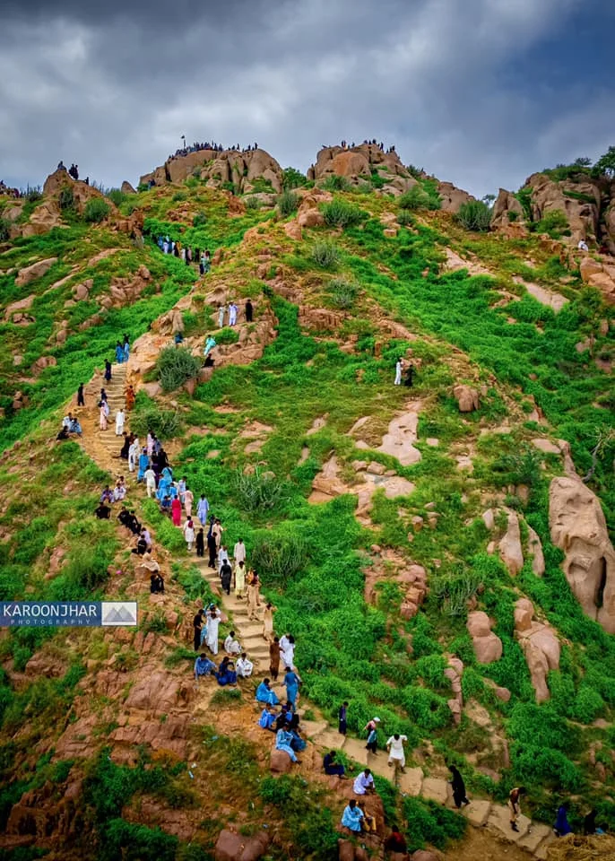

Mountain Exploration
Peak Height
1,100 feet above sea level
Hiking Trails
Multiple trails for all skill levels
Viewpoints
Scenic spots for photography
About Karoonjhar Mountains
The Karoonjhar Mountains are a geological marvel in the Thar Desert, rising dramatically from the surrounding plains. These mountains are not only known for their natural beauty but also for their geological significance and rich mineral deposits.
The mountains feature unique rock formations, hidden caves, and diverse wildlife. The white marble found in these mountains has been used in various historical structures, including the famous temples of the region.
Mountain Activities
- Hiking and Trekking
- Rock Climbing
- Nature Photography
- Bird Watching
Popular Trails

Beginner's Path
An easy 2-hour trek suitable for families and beginners
2 hours
Easy

Summit Trail
Challenging 5-hour trek to the mountain peak
5 hours
Difficult